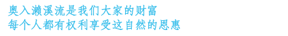
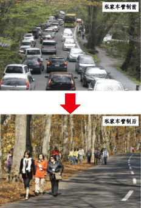

私家车交通管制的目的、背景

但是，相反的，一到观光旺季自动车蜂拥而至，导致拥堵、环境影响等各种问题。
为此，奥入濑溪流合理化使用协议会以“保护自然环境、解决拥堵”为目标，致力于尝试私家车的交通管制。由于迂回路上大型车辆路过困难、溪流沿路的102号国道同时还是当地的生活道路和产业道路等众多原因，为实现规划管制车型及扩大管制期间等事项，需要解决整顿能够安全迂回奥入濑溪流的“青橅山迂回路”等众多课题。
今后将继续每年尝试，力图落实本措施，望各位给予我们理解与配合。
|  |